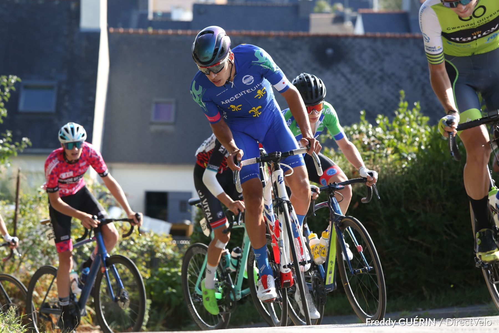
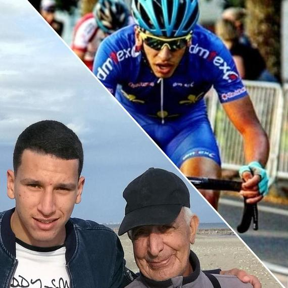
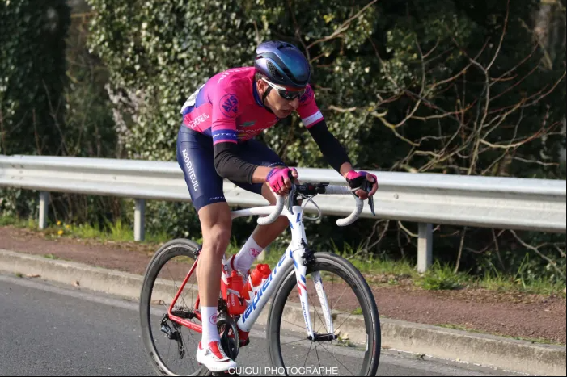

Rayan Boulahoite, étudiant à l'EMLV et cycliste de haut niveau

Rayan Boulahoite est né le 24 février 2004 à Colombes, il est âgé de 18 ans. Après avoir obtenu son baccalauréat avec la mention assez bien, il intègre l'EMLV, une école de commerce à la Défense dans les Hauts-de-Seine. En parallèle, il suit une carrière de coureur cycliste de haut niveau 🚴 qui a d'ailleurs atteint l'un de ses sommets lors de la saison 2022 avec d'excellents résultats au niveau international. Ces résultats lui ont permis de signer avec la prestigieuse équipe Vendée U, réputée comme la plus grande équipe en France au niveau élite.
Pour voir l'ensemble de ses résultats lors de sa saison en 2022, voici sa fiche DirectVelo où l'on retrouve aussi des photos
Voir ses résultats en compétition sur DirectVeloProjet d'une oeuvre caritative en hommage à son grand père
Rayan Boulahoite a réalisé à l'âge de 16 ans une traversée à vélo longue de 850 kilomètres entre Conflans-Sainte-Honorine (Yvelines) et Mèze (Hérault) afin de rendre hommage à son grand-père et de récolter des fonds pour la lutte contre le cancer à travers cet effort physique. Pour en savoir plus, suivez ce lien :
Voir la cagnotte de cette oeuvre carritative pour la ligue contre le cancerSon évolution sportive en détail 
Pour en apprendre un peu plus sur son évolution sportive, nous vous invitons à regarder son interview réalisée en début de saison 2022
Son interview en debut de saison 2022